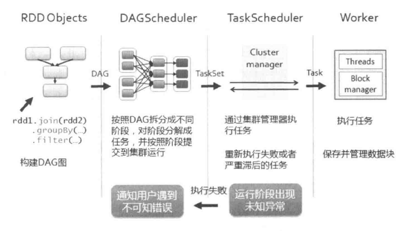

Spark学习笔记(4) —— 作业执行原理
Spark的作业和任务调度系统是其核心，它能够有效地进行调度是因为对任务的DAG划分和容错，是的它对低层到顶层的各个模块之间的调度和处理都显得游刃有余。
- 作业(job): RDD中由行动操作所生成的一个或多个调度阶段。
- 调度阶段(stage): 每个作业会因为RDD之间的依赖关系拆分成多组任务集合，称为调度阶段，也叫任务集(TaskSet)。调度阶段的划分是由DAGScheduler来划分的。调度阶段有Shuffle Map Stage和Result Stage两种
- 任务(task): 分发到Executor上的工作任务，是Spark实际执行应用的最小单元。
- DAGScheduler: DAGScheduler是面向调度阶段的任务调度器，负责接收Spark应用提交的作业，根据RDD的依赖关系划分调度阶段，并提交调度阶段给TaskCheduler。
- TaskScheduler: TaskScheduler是面向任务的调度器，它接收DagScheduler提交过来的调度阶段，然后以把任务分发到Work节点运行，由Worker节点的Executor来运行任务。
Spark的作业调度主要是指基于RDD的一系列操作构成一个作业，然后在Executor中执行。这些操作算子主要分为转换操作和行动操作，对于转换操作的计算是lazy级别的，也就是延迟执行，只有出现了行动操作才出发了作业的提交。在Spark调度中最重要的是DAGScheduler和TaskScheduler两个调度器，其中，DAGSscheduler负责任务的逻辑调度。将作业拆分成不同阶段的具有依赖关系的任务集，而TaskCheduler则负责具体任务的调度执行。

- Spark应用程序进行各种转换操作，通过行动操作触发作业运行。提交之后根据RDD之间的依赖关系构建DAG图，DAG图提交给DAGScheduler进行解析。
- DAGScheduler是面向调度阶段的高层次的调度器，DAGScheduler把DAG拆分成相互依赖的调度阶段，拆分调度阶段是以RDD的依赖是否为宽依赖，当遇到宽依赖就划分为新的调度阶段。每个调度阶段包含一个或多个任务，这些任务形成任务集，提交给底层调度器TaskCheduer进行调度运行。另外，DAGScheduler记录哪些RDD被存入磁盘等物化动作，同时要寻求任务的最优化调度，例如数据本地星等；DAGScheduler监控运行调度阶段过程，如果某个调度阶段运行失败，则需要重新提交该调度阶段。
- 每个TaskScheduler只为一个SparkContext实例服务，TaskScheduler接收来自DAGScheduler发送过来的任务集，TaskSchduler收到任务集后负责把任务集以任务的形式一个个分发到集群Worker节点的Executor中去运行。如果某个任务运行失败，TaskScheduler要负责重试。另外，如果TaskScheduler发现某个任务一直未运行完，就可能启动同样的任务运行同一个任务，哪一个任务先运行完就用哪个任务的结果。
- Worker中的Executor收到TaskScheduler发送过来的任务后，以多线程的方式运行，每一个线程负责一个任务。任务运行结束后要返回给TaskScheduler，不同类型的任务，返回的方式也不同。ShuffleMapTask返回的是一个MapStatus对象，而不是结果本身;ResultTask根据结果大小的不同，返回的方式又可以分为两类。